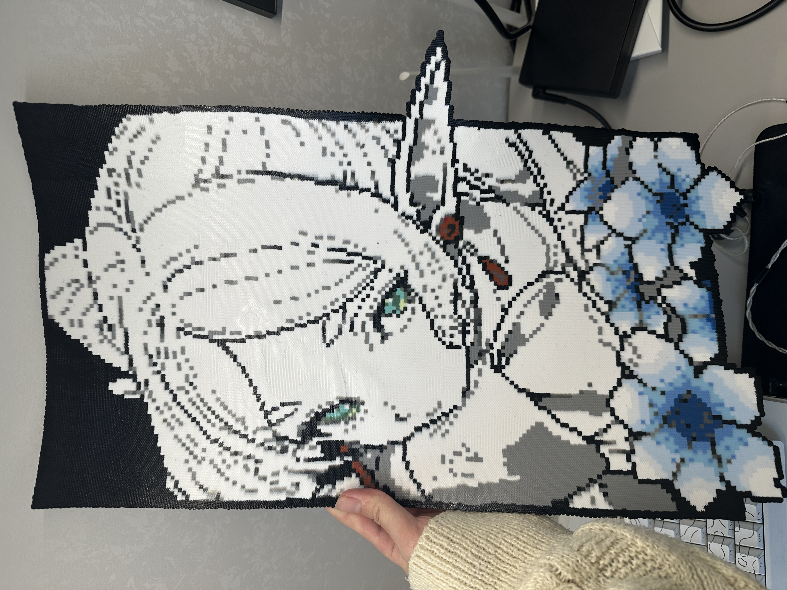
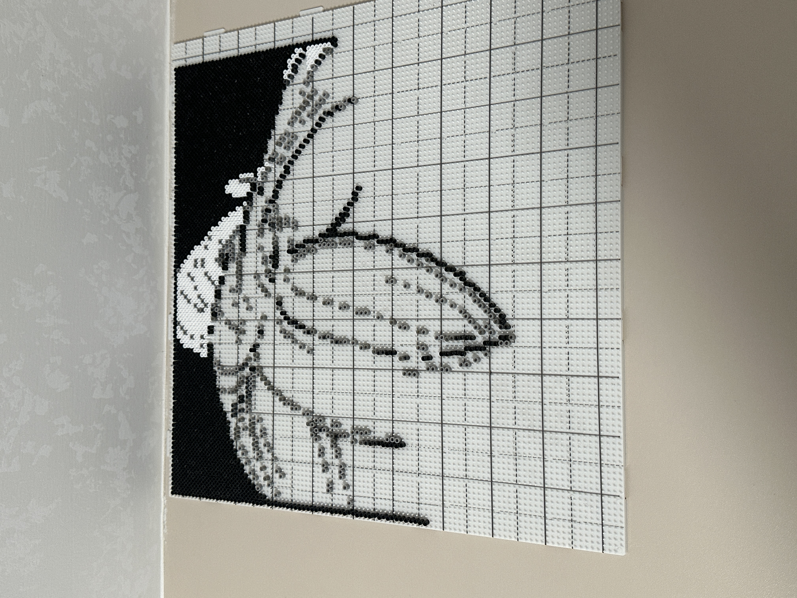
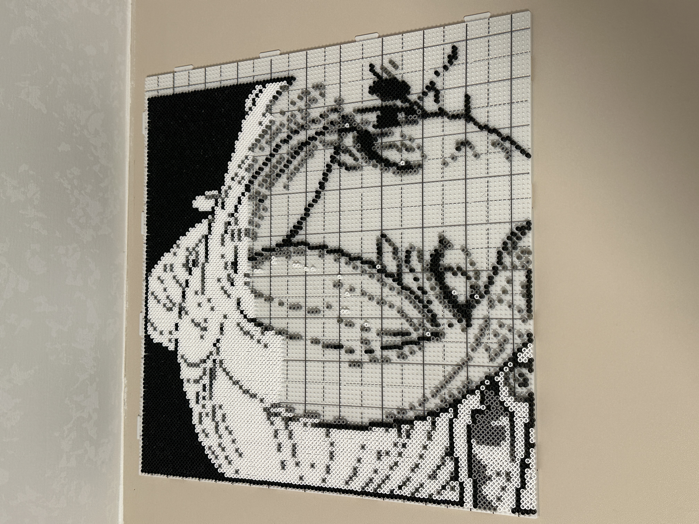
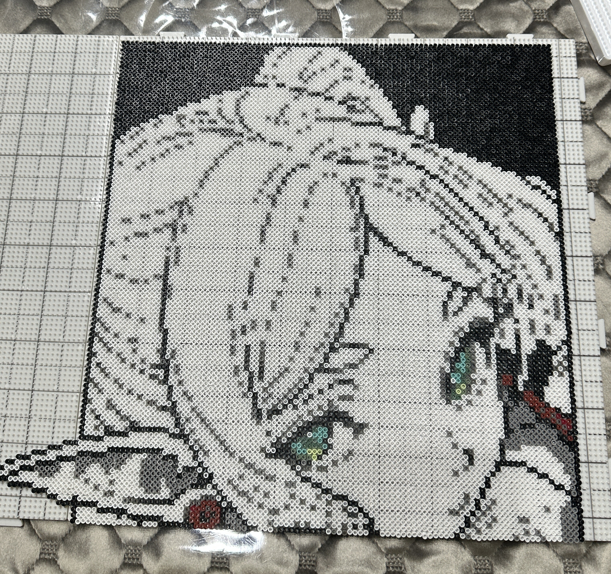
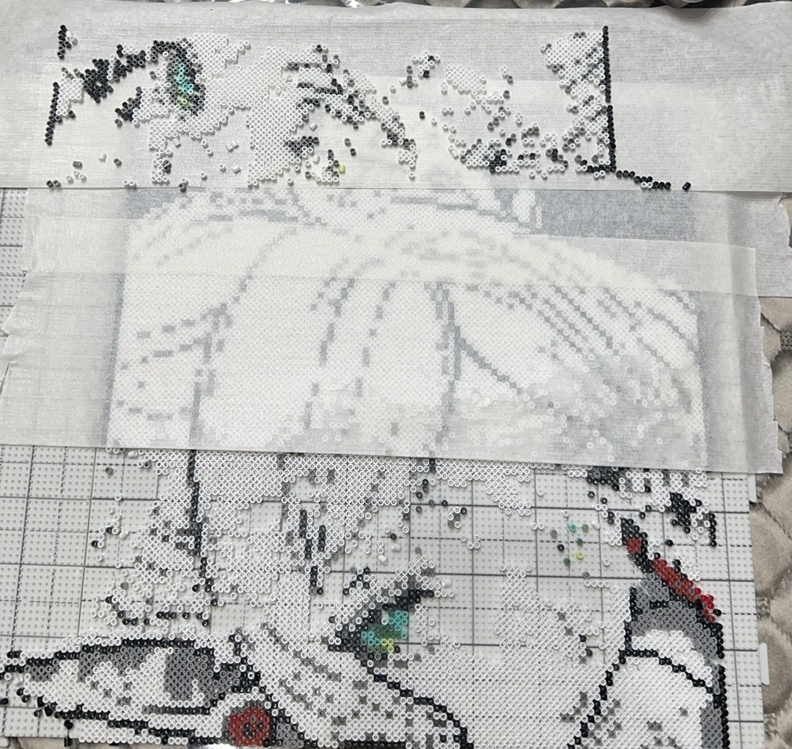
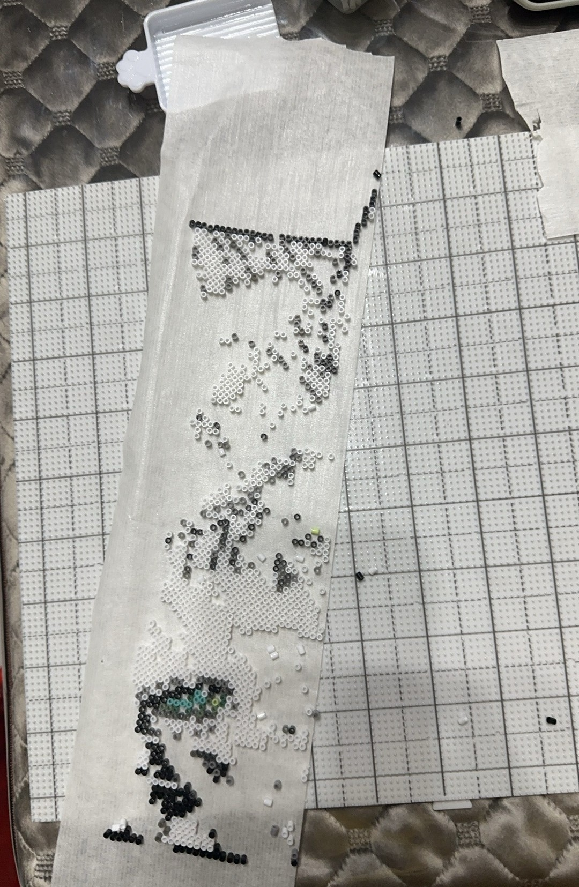

Color List
材料清单
- H2 白色10806 颗
- H7 黑色3986 颗
- H3 浅灰色1842 颗
- H4 中灰色347 颗
- H6 深灰色178 颗
- H5 深中性灰153 颗
- H16 深棕 / 黑褐色112 颗
- B18 浅青绿色19 颗
- M2 浅灰橄榄绿18 颗
- B25 深绿色17 颗
- B24 浅黄色6 颗

点击步骤标题展开或收起内容，使用 JS 做交互，不把长篇说明一次性堆在页面上。

先用 H7 黑色把人物外轮廓、头发边界、衣物轮廓和背景中的主要分界线全部勾出来。轮廓是这张图最重要的定位层，先把黑色结构摆准，后面铺色时就不容易走形，也能更快判断每个区域该落在哪个格子里。

在轮廓稳定后，开始大面积铺 H2 白色作为头发、皮肤和衣物的主体底色，同时按区域补入 H3 浅灰色做初步过渡。这一步的重点不是细节，而是尽快建立整张图的明暗大关系，让人物主体先完整站出来。

主体底色铺完后，再加入 H4、H5、H6、H16 这些更深的灰阶和暗色，把头发层次、衣物褶皱、背景暗部以及轮廓附近的阴影逐步补齐。最后再处理眼睛部分，用 B18、M2、B25 和 B24 完成芙莉莲神态最关键的颜色过渡和高光提亮。

确认全部区域都摆放完成后，盖上熨斗纸，按分区逐步熨烫，不要一次性在同一位置停留太久。大图更适合边熨边检查豆孔收缩状态，等各区都完成后再整体冷却压平，这样更能避免翘边、移位和局部受热不均的问题。
这一部分改成记录真实制作中的风险点，后面也可以直接放入你自己熨烫失误时拍下来的照片，作为更有说服力的经验展示。

